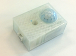

PIR-sensor© 2018, ProtoIt Platform: INFENTO |  |
Beschrijving:
Een PIR-sensor meet veranderingen in het infrarode licht (warmte-straling).
Omdat de warmte van een object verschilt van de achtergrondwarmte,
zorgt de beweging van het object voor verandering in het infrarode licht.
De sensor reageert meteen op nieuwe beweging, maar ijlt 8 seconden na
als de beweging is gestopt.
Onderdelen:
Bewegingsensor
| Adres | I2C-adres van de driver.Standaard op adres 11 ingesteld. |
| Ziet obstakel | Dit signaal wordt uitgezonden als de sensor beweging constateert. |
| Geen obstakel | Dit signaal wordt uitgezonden als de sensor geen beweging constateert. Na een beweging duurt het ongeveer 8 seconden voordat dit signaal wordt uitgezonden. |